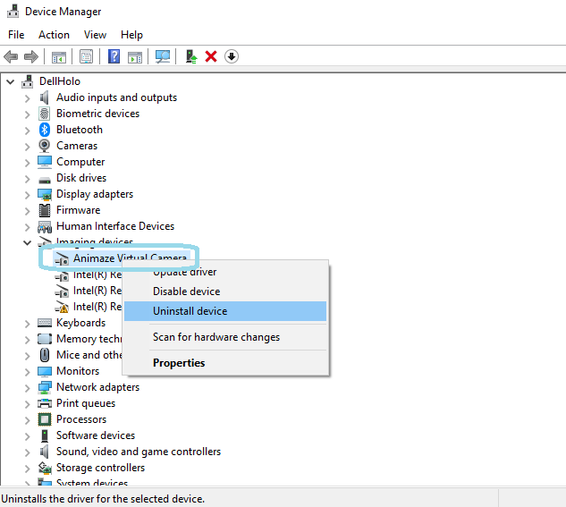
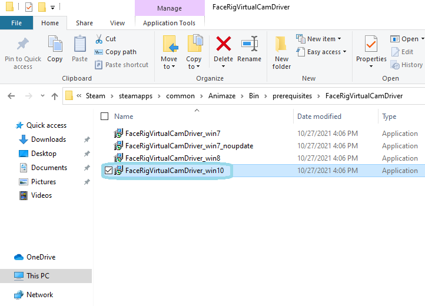

Animaze Desktop: How do I troubleshoot Animaze broadcasting?
In case the Animaze Virtual Camera does not work either because it cannot be installed or because OBS, SLOBS and similar cannot detect the Animaze Virtual Camera as an input option. In those cases, the FaceRig Virtual Camera acts as a fallback. If the FaceRig virtual camera does not install automatically, you can manually install the FaceRig Virtual Camera:
First, go to Windows’s Device Manager > Imaging Devices > right-click on Animaze Virtual Camera and then on Uninstall.

From there, go to Steam\steamapps\common\Animaze\Bin\prerequisites\FaceRigVirtualCamDriver
You will see four versions of the FaceRig Virtual Camera driver.
Install the driver that matches your Windows version. For example, if you’re on Windows 8, install “FaceRigVirtualCamDriver_win8”; if you’re on Windows 10, install “FaceRigVirtualCamDriver_win10”.

Once you’ve installed the driver, make sure to select FaceRig Virtual Camera as the input device in OBS, SLOBS, etc.
Launch Animaze and click on Enable Virtual Camera.
If the Animaze Virtual Camera appears as an input source in OBS (or similar), but your broadcast won’t start, and you see a “Cannot start broadcasting” error, make sure to click the enable virtual camera button in Animaze. If you click the virtual camera button before you set up your source in OBS, it will not work.